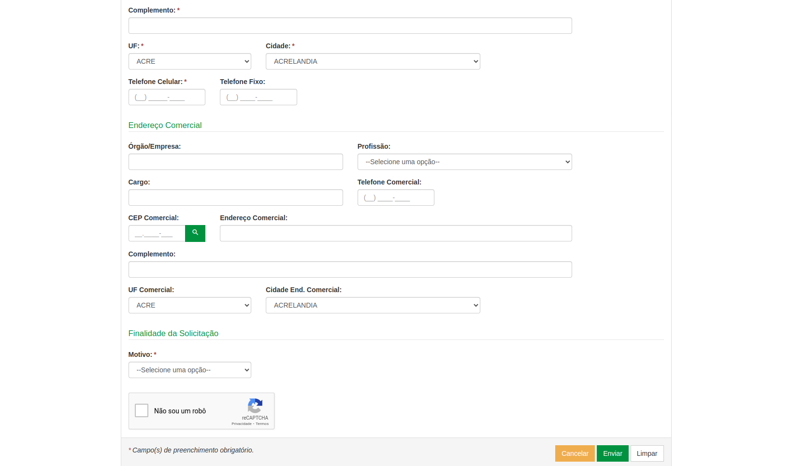
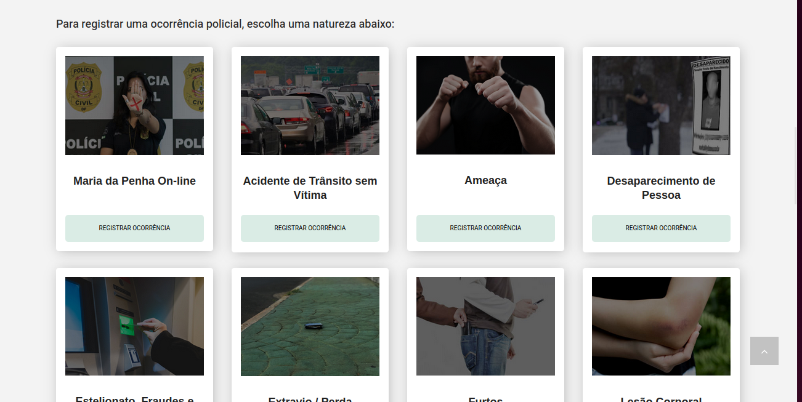

GOMS (Goals, Operators, Methods, And Selection Rules)
Introdução
O GOMS é um método para descrever uma tarefa e o conhecimento do usuário sobre como realizá-la em termos de objetivos (goals), operadores (operators), métodos (methods) e regras de seleção (selection rules).
- Os objetivos representam o que o usuário quer realizar utilizando o software
- Operadores: são as ações cognitivas ou físicas que o sistema permite que o usuário execute, como inserir dados via teclado
- Os métodos são sequências bem conhecidas de subobjetivos e operadores que permitem atingir um objetivo maior.
- Regras de exeção: Referem-se a tomada de decisão por parte do usuário diante da possibilidade de possuir mais de um método para utilizar
Funcionalidades Avaliadas pela GOMS
Tabela que monstra quais funcionalidades foram avaliadas pela HTA
| Funcionalidade | Integrante Responsável |
|---|---|
| Pesquisar Procurados | Lara |
| Solicitar Antecedentes Criminais | Renata |
| Validar Antecedentes Criminais | João |
| 197- Denúncia Online | Giovana |
| Solicitar Carteira de Identidade | Raissa |
| Registrar Ocorrência | Rayene |
| Retrato Falado Online | Renata |
Pesquisar Procurados
Introdução
No site do PCDF escolhemos algumas funcionalidades, entre elas a de visualização, pesquisa e denúncia de Procurados do Distrito Federal. A integrante Lara Giuliana ficou responsável por essa funcionalidade. * Goal 1: Listar todos os procurados pela PCDF * Method 1: Inserir dados- deixar os espaços sem preencher e nao opção "nome" selecionar "todos" * Method 2: Selecionar a região "DF"
-
Goal 2: Procurar um nome específico
- Method 1: Ir até o endereço da PCDF (ou real ou eletrônico) e informar os seguintes dados
- Operation 1: Informar nome a ser buscado
- Operation 2: Informar crime cometido (opcional)
- Operation 3: Informar região de atuação (opcional)
- Operation 4: Informar gênero (opcional)
- Operation 5: submeter dados
- Method 1: Ir até o endereço da PCDF (ou real ou eletrônico) e informar os seguintes dados
-
Goal 3: Denunciar pessoa procurada
- Method 1: Ir até o endereço da PCDF (ou real ou eletrônico) e informar os seguintes dados
- Operation 1: Informar local do ocorrido (opcional)
- Operation 2: Informar UF, cidade e bairro (opcional)
- Operation 3: Informar tipo de crime (opcional)
- Operation 4: Informar histórico: todo o relato da sua denúncia
- Operation 5: Selecionar se o indivíduo é menor de idade (opcional)
- Operation 6: Anexar algum arquivo (como boletim de ocorrência, vídeos, filmagens) (opcional)
- Operation 7: Comprovar identidade respondendo captcha no meio eletrônico ou informando documento numa delegacia
- Operation 8: Submeter dados
- Method 1: Ir até o endereço da PCDF (ou real ou eletrônico) e informar os seguintes dados
Solicitar Antecedentes Criminais
Nessa tarefa o usuário pretende solicitar os seus antecedentes criminais pelo site do PCDF, foi analisada pela integrante Renata Quadros. Primeiro na página inicial como mostra na Figura 4, em seguida pede-se o código de verificação como mostra na Figura 5 e o preenchimento do formulário como mostra na figura 6.

Figura 2 - Página inicial de Antecedentes criminais. Fonte: Site PCDF

Figura 3 - Código de verificação de Solicitação de Antecedentes. Fonte: Site PCDF

Figura 4 - Formulário 1. Fonte: Site PCDF

Figura 5 - Formulário 2. Fonte: Site PCDF
- GOAL 0: Descobrir se a pessoa possui antecedentes criminais.
-
GOAL 1: Solicitar os antecedentes criminais.
- METHOD 1.A: Acessar o sistema de solicitação de antecedentes criminais da PCDF.
(SEL. RULE: O usuário possui acesso ao sistema e sabe como navegar nele.)
- METHOD 1.B: Entrar em contato com a Polícia Civil do Distrito Federal por telefone ou e-mail para obter instruções sobre como solicitar os antecedentes criminais.
(SEL.RULE: O usuário não está familiarizado com o sistema online ou não possui acesso a ele.)
-
GOAL 2: Preencher corretamente os dados necessários para a solicitação de antecedentes criminais.
- METHOD 2.A: Inserir os dados pessoais da pessoa para quem os antecedentes criminais estão sendo solicitados.
(SEL. RULE: O usuário possui os dados pessoais da pessoa.)
- OP. 2.A.1: Digitar o nome completo da pessoa.
- OP. 2.A.2: Inserir o nome completo dos pais da pessoa (se aplicável).
- OP. 2.A.3: Preencher o CPF (Cadastro de Pessoa Física) da pessoa.
- OP. 2.A.4: Fornecer o RG (Registro Geral) da pessoa.
- OP. 2.A.5: Indicar a data de nascimento da pessoa.
- OP. 2.A.6: Especificar a naturalidade (cidade e estado de nascimento) da pessoa.
- OP. 2.A.7: Selecionar o sexo da pessoa.
- OP. 2.A.8: Informar o estado civil da pessoa.
- OP. 2.A.9: Se aplicável, inserir o número da CNH (Carteira Nacional de Habilitação) da pessoa.
- OP. 2.A.10: Se aplicável, fornecer o número do passaporte da pessoa.
- OP. 2.A.11: Inserir o endereço residencial completo da pessoa.
- OP. 2.A.12: Se aplicável, incluir o endereço comercial completo da pessoa.
-
OP. 2.A.13: Indicar o CEP (Código de Endereçamento Postal) tanto do endereço residencial quanto do endereço comercial.
-
METHOD 2.B: Revisar os dados fornecidos para garantir que estejam corretos e completos.
(SEL. RULE: O usuário deseja evitar erros na solicitação.)
- OP. 2.B.1: Verificar se todos os campos foram preenchidos corretamente.
- OP. 2.B.2: Revisar se não há erros de digitação nos dados fornecidos.
- OP. 2.B.3: Confirmar se os dados estão atualizados e correspondem à pessoa correta.
- OP. 2.B.4: Corrigir qualquer informação incorreta ou incompleta identificada durante a revisão.
- GOAL 3: Confirmar o envio da solicitação.
- METHOD 3.A: Enviar a solicitação através do sistema online e aguardar a confirmação.
(SEL. RULE: O usuário tem acesso à internet e confia na eficácia do sistema.)
- METHOD 3.B: Entrar em contato com a PCDF para confirmar o recebimento da solicitação.
(SEL. RULE: O usuário prefere confirmar pessoalmente.)
-
GOAL 4: Receber um código de acompanhamento da solicitação.
- METHOD 4.A: Aguardar o recebimento do código de acompanhamento através do e-mail fornecido na solicitação.
(SEL. RULE: O usuário confia na eficácia do sistema de envio de e-mails.)
- METHOD 4.B: Entrar em contato com a PCDF para solicitar o código de acompanhamento, caso não seja recebido dentro do prazo esperado.
(SEL.RULE: O usuário prefere confirmar pessoalmente.)
Validar Antecedentes Criminais
Nessa tarefa o usuário pretende validar uma certidão de antecedentes criminais. Realizado por João Pedro
- GOAL 0: Validar certidão de antecedentes criminais
- GOAL 1: Preencher os dados da certidão
- OP 1.1: Preencher o número da certidão
- OP 1.2: Preencher o ano de solicitação da certidão
- OP 1.3: Preencher o ano de nascimento na certidão
- GOAL 2: Provar que o usuário não é um robô
- OP 2.1: Marcar o checkbox ao lado da frase "Eu não sou um robô"
- OP 2.2: Realizar tarefa aleatória que o CAPTCHA oferecer, caso ofereça
- GOAL 3: Pesquisar certidão
- OP 3.1: Clicar em "Pesquisar"
- GOAL 1: Preencher os dados da certidão
197- Denúncia Online
Nessa tarefa o usuário pretende fazer uma denúncia no site da PCDF, foi analisada pela integrante Giovana Barbosa, como monstrado na figura 1. Ultilizando a CMN-GOMS
- GOAL 0: Fazer uma denuncia Online
- GOAL 1: Entrar na parte de Denúncia Online
- OP 1.1: Guiar o mouse para a aba de denuncia online
- 0P 1.2: Pressionar o botão
- GOAL 2: Selecionar a opção denuncia por meios de comunicação
- OP 2.1: Guiar o mouse para a opção 'Denuncia de meios de comunicação'
- OP 2.2: Pressionar o botão
- OP 2.3: fazer a denuncia
- GOAL 3: Selecionar denucia Online
- OP 3.1: Colocar as informações
- OP 3.2: Clicar no botão denunciar
- GOAL 1: Entrar na parte de Denúncia Online
Agendamento de Carteira de Identidade
Essa atividade tem como objetivo os usuários ao acessar a funcionalidade de marcação de carteira de identidade é agendar um horário para emissão ou renovação do documento de identidade. Feita por Raissa Andrade.
-
GOAL 0: Solicitar Carteira de Identidade.
- OP 1: Acessar o sita da PCDF
- OP 1.1: Abrir o navegador
- OP 1.2: DIgitar "https://www.pcdf.df.gov.br" na barra de endereços
- OP 1.3: Apertar Enter
- OP 1.4: Procurar "Serviços"
- OP 1: Acessar o sita da PCDF
-
GOAL 1: Agendamento
- OP 2: Escolher serviço e Unidade de Atendimento
- OP 2.1: Selecionar primeira ou segunda via
- OP 2.2: Selecionar Unidade de atendimento
- OP 2.3: Escolher data
- OP 2.4: Escolher horário
- OP : Confirmações de dados
- OP 2: Escolher serviço e Unidade de Atendimento
-
GOAL 2: Preencher o Formulário de Solicitação
- OP 3: Ler instruções da página
- OP: Preencher os campos obrigatórios
- OP 3.1: Nome Completo
- OP 3.2: Data de Nascimento
- OP 3.3: Endereço
- OP 3.4: Número de telefone
- OP: Revisar os dados inseridos
-
GOAL 3: Resumo e Confirmação do agendamento
- OP 4: Ler dados da página
- OP 4.1: Abrir e-mail
- OP 4.2: Copiar código de autorização
- OP 4.3: Colar na página da PCDF
- OP 4.4: Finalizar
- OP 4: Ler dados da página
Registro de Ocorrência
Modelo Goals, Operators, Methods, and Selection rules (GOMS)
Rayene Almeida aplicará o método GOMS no modelo CMN para analisar detalhadamente as ações cognitivas e motoras dos usuários ao realizar o registro de ocorrências no site da PCDF. A integrante identificará os objetivos que os usuários buscam alcançar ao usar essa funcionalidade, os operadores cognitivos e motores necessários para realizar as tarefas, os métodos sequenciais utilizados para atingir esses objetivos e as regras de seleção que orientam o comportamento do usuário diante de diferentes opções disponíveis na interface.
Meta: Registrar uma ocorrência no site da PCDF
Passos GOMS:
- GOAL 0: Registrar uma Ocorrência
- GOAL 1: Acessar a seção de "Registro de Ocorrência" no site da PCDF
- OP 1.1: Guiar o mouse para a seção "Delegacia Eletrônica"
- OP 1.2: Pressionar o botão para acessar a seção
- GOAL 2: Ler as instruções e requisitos fornecidos
- OP 2.1: Ler as instruções na página de registro de ocorrência
- OP 2.2: Selecionar a natureza da ocorrência
- GOAL 3: Preencher o formulário de registro
- OP 3.1: Identificar os campos obrigatórios no formulário de registro
- Cognitivos:
- Identificar os campos obrigatórios
- Cognitivos:
- OP 3.2: Decidir quais informações são relevantes e devem ser fornecidas
- Cognitivos:
- Decidir quais informações são necessárias para a ocorrência
- Cognitivos:
- OP 3.3: Mover o cursor para clicar nos campos de entrada do formulário
- Motoras:
- Mover o cursor para os campos de entrada
- Motoras:
- OP 3.4: Digitar as informações necessárias nos campos do formulário
- Motoras:
- Digitar as informações necessárias
- Motoras:
- OP 3.1: Identificar os campos obrigatórios no formulário de registro
- GOAL 4: Revisar e enviar o formulário de registro
- OP 4.1: Revisar as informações inseridas para garantir que estejam corretas e completas
- Cognitivos:
- Revisar as informações inseridas
- Cognitivos:
- OP 4.2: Clicar no botão "Enviar" para submeter a ocorrência
- Motoras:
- Mover o cursor para clicar no botão de envio
- Motoras:
- OP 4.1: Revisar as informações inseridas para garantir que estejam corretas e completas
- GOAL 1: Acessar a seção de "Registro de Ocorrência" no site da PCDF

Figura 6 - Página inicial do Registro de Ocorrência. Fonte: Site PCDF

Figura 7 - Seleção de Natureza para a Ocorrência. Fonte: Site PCDF

Figura 8 - Formulário de Ocorrência 3. Fonte: Site PCDF
Retrato Falado Online: Descreva e Identifique
Nessa tarefa o usuário pretende fazer um retrato falado de forma online pelo site do PCDF, foi analisada pela integrante Renata Quadros.
-
GOAL 0: Fazer um Retrato Falado - Online
- METHOD 0.A: Navegar até o site da Polícia Civil do Distrito Federal (PCDF).
-
GOAL 1: Selecionar a opção de Retrato Falado Online:
- METHOD 1.A: Escolher "Retrato Falado Online" dentre as opções disponíveis.
- OP. 1.A.1: Procurar por opções de denúncia específicas, como "Retrato Falado Online".
- OP. 1.A.2: Clicar na opção encontrada para selecioná-la.
(SEL. RULE: O usuário procura a opção que corresponde à sua necessidade específica.)
- METHOD 1.A: Escolher "Retrato Falado Online" dentre as opções disponíveis.
-
GOAL 2: Preencher o formulário de Retrato Falado Online:
- METHOD 2.A: Fornecer os dados pessoais solicitados (nome, e-mail, CPF).
- OP. 2.A.1: Digitar nome completo da pessoa.
- OP. 2.A.2: Digitar o CPF.
- OP. 2.A.3: Digitar o e-mail.
- METHOD 2.B: Selecionar o tipo de denúncia (ex: Assalto/Roubo).
- METHOD 2.C: Descrever detalhadamente o incidente e as características do suspeito.
- OP. 2.C.1: Descrever detalhadamente o incidente.
- OP. 2.C.2: Descrever detalhadamente as características do suspeito.
- METHOD 2.D: Criar o retrato falado do suspeito.
- OP. 2.D.1: Apertar o botão de criar avatar.
- OP. 2.D.2: Selecionar um avatar criado.
- METHOD 2.E: Avaliar o avatar selecionado
- OP. 2.E.1: Descrever a fidelidade do avatar de acordo com a lembrança do suspeito.
(SEL. RULE: O usuário segue o fluxo natural do formulário, preenchendo campos conforme necessário.)
- METHOD 2.A: Fornecer os dados pessoais solicitados (nome, e-mail, CPF).
-
GOAL 3: Enviar a denúncia:
- METHOD 3.A: Clicar no botão de envio após revisão completa dos dados fornecidos.
-
GOAL 4: Receber confirmação da denúncia:
- METHOD 4.A: Verificar a mensagem informativa e aguardar a confirmação por e-mail da recepção da denúncia.
- METHOD 4.B: Aguardar atualizações dentro do prazo estipulado.
Bibliografia
BARBOSA, S.D.J.; SILVA, B.S. Interação Humano-Computador. Editora Campus-Elsevier, 2010.
Referências bibliograficas
Polícia Civil do Distrito Federal. Polícia Civil do Distrito Federal. Disponível em: https://www.pcdf.df.gov.br/. Acesso em: 14 abr 2024.
Histórico de Versões
| Versão | Descrição | Autor(es) | Data | Revisor(es) | Data de revisão |
|---|---|---|---|---|---|
| 1.0 | Criação do documento de hta | Giovana Barbosa | 18/04 | Renata Quadros | 18/04 |
| 1.1 | Registro de Ocorrência | Rayene Almeida | 18/04 | Giovana Barbosa , Renata Quadros | 19/04 |
| 1.2 | 197 | Giovana Barbosa | 18/04 | Renata Quadros | 19/04 |
| 1.3 | Solicitar antecedentes criminais | Renata Quadros | 19/04 | Giovana Barbosa | 19/04 |
| 1.4 | Solicitar Carteira de Identidade | Raissa Andrade | 19/04 | Renata Quadros,Giovana Barbosa | 19/04 |
| 1.5 | Cenário visualizar procurados | Lara Giuliana | 19/04 | Giovana Barbosa , Renata Quadros | 19/04 |
| 1.6 | Atualização de figuras | Rayene Almeida | 09/05 | Renata Quadros | 09/05 |
| 1.7 | Retrato falado online | Renata Quadros | 09/05 | Giovana Barbosa | 10/05 |
| 1.8 | Correções da Carteira de Identidade | Raissa Andrade | 11/05 | Renata Quadros, Giovana Barbosa | 10/05 |
| 1.9 | Correção de link | Giovana Barbosa | 15/05 | Renata Quadros, Rayene Almeida | 15/05 |
| 2.0 | Correção Procurados | Lara Giuliana | 01/06 | Giovana Barbosa | 01/06 |
| 2.1 | Correção GOMS retrato falado | Renata Quadros | 27/06 | Giovana Barbosa | 07/07 |